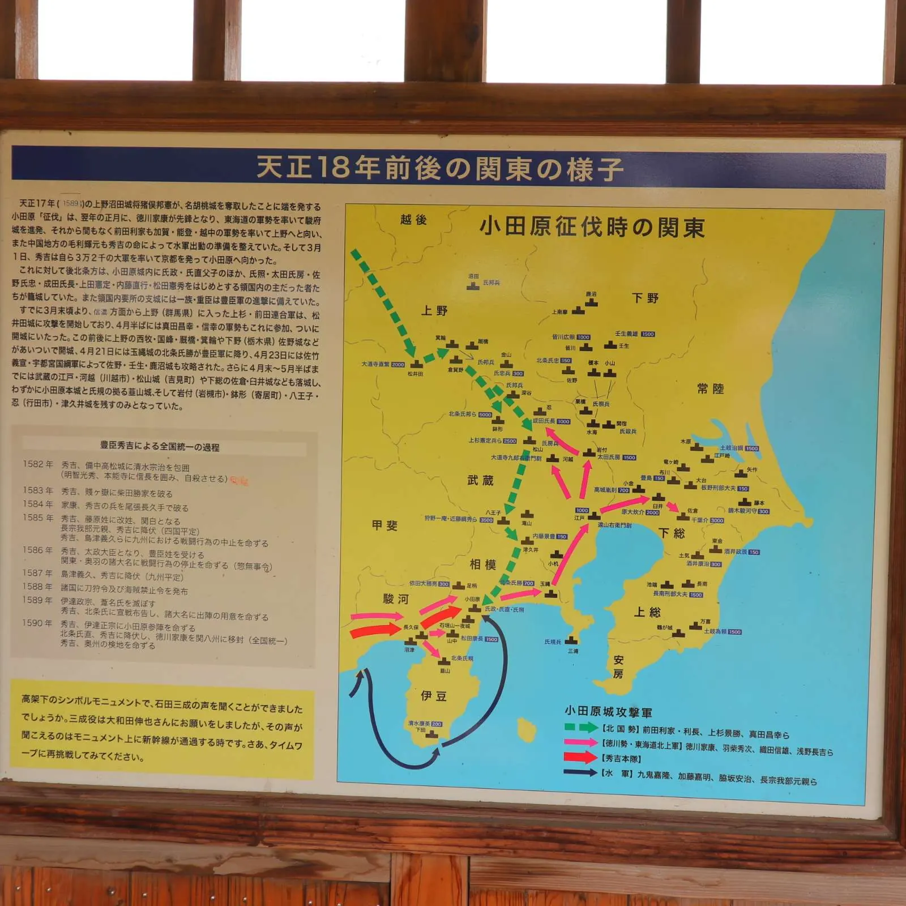
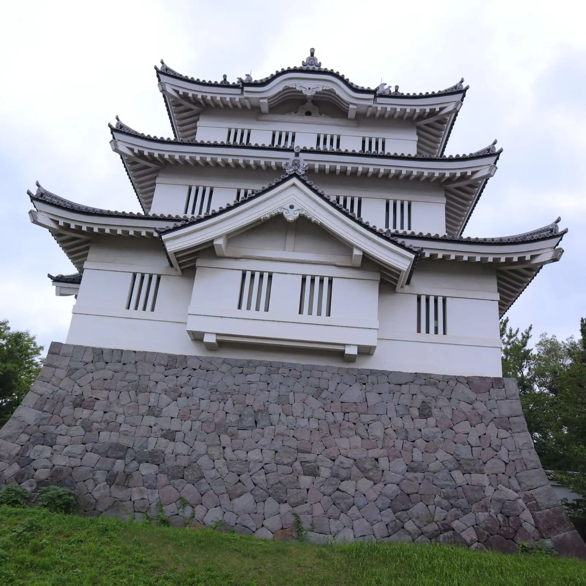
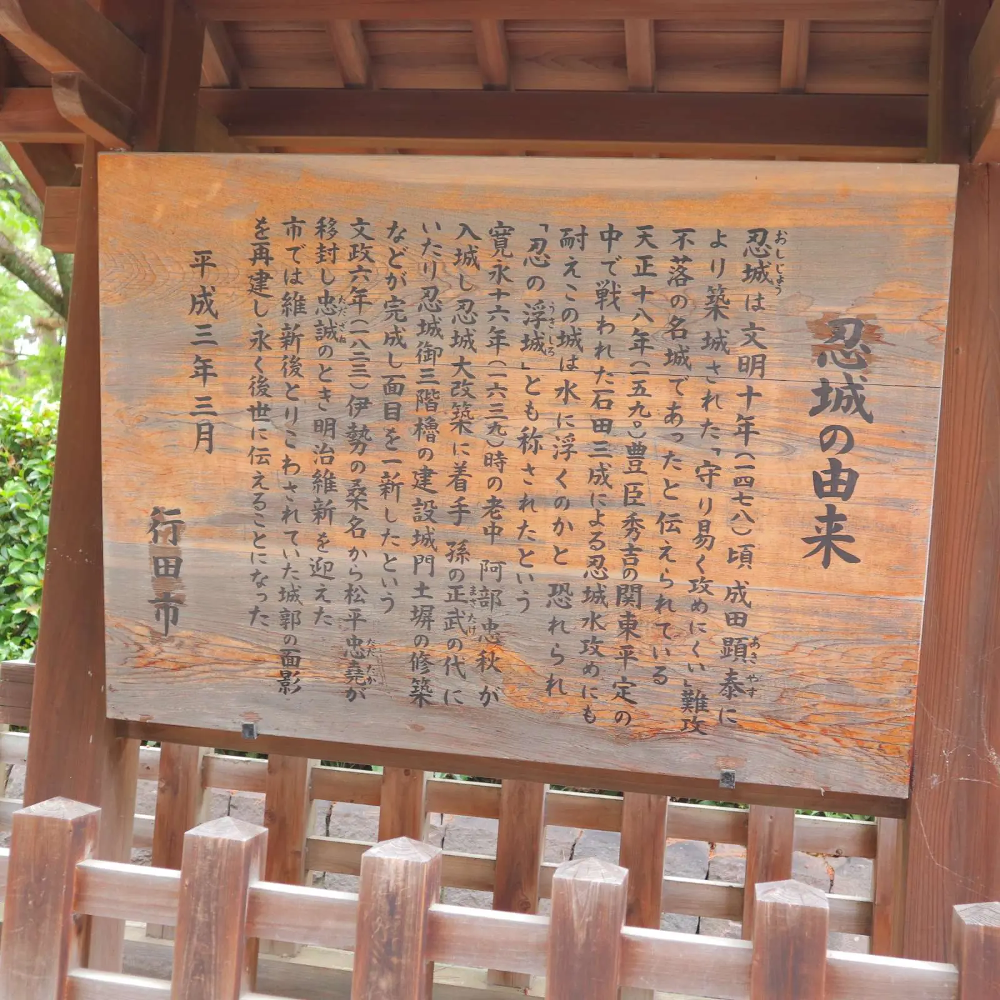
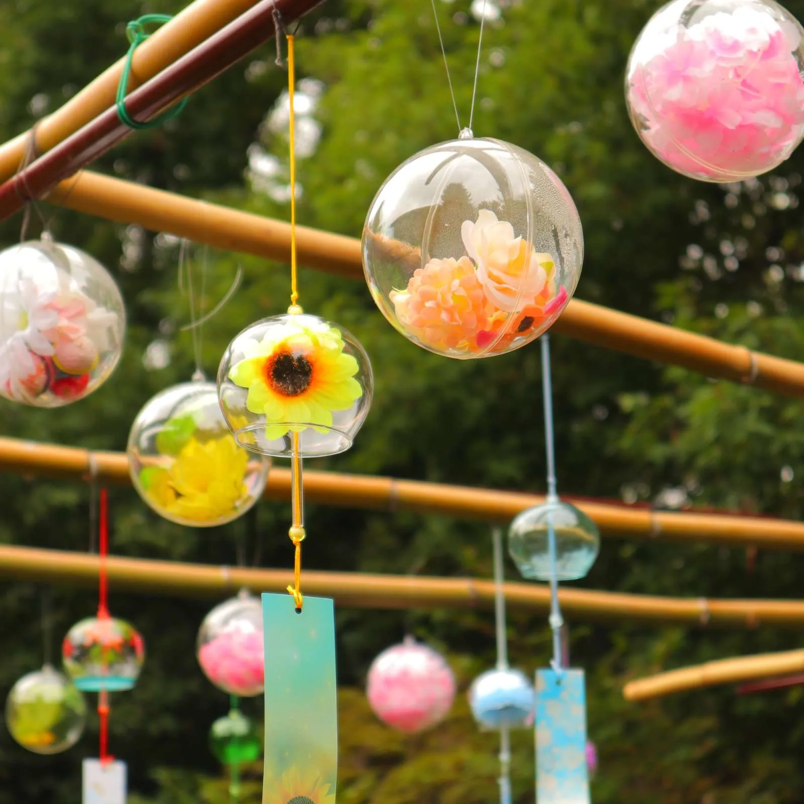
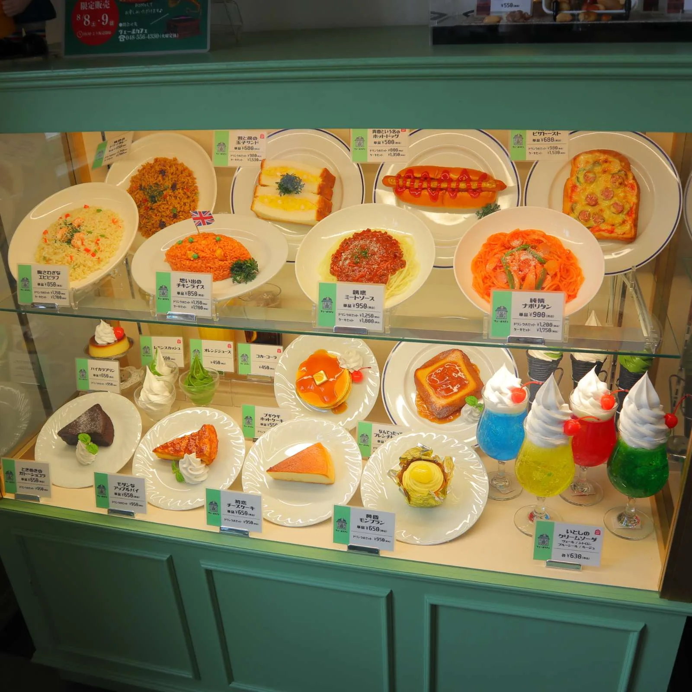
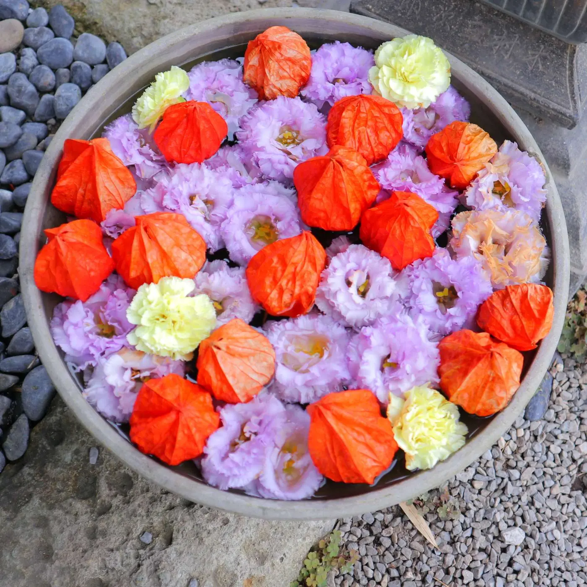
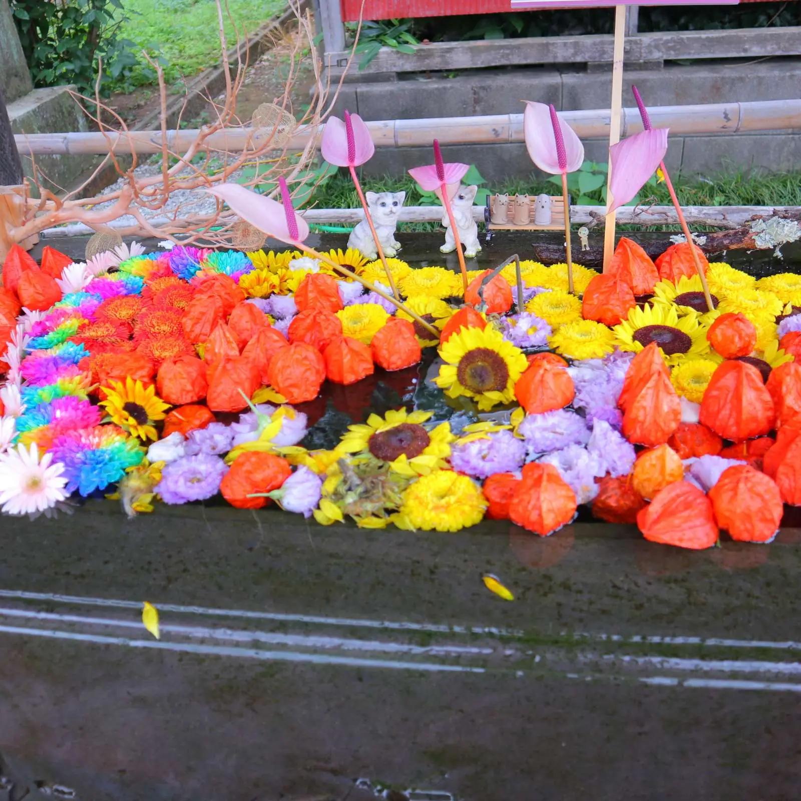
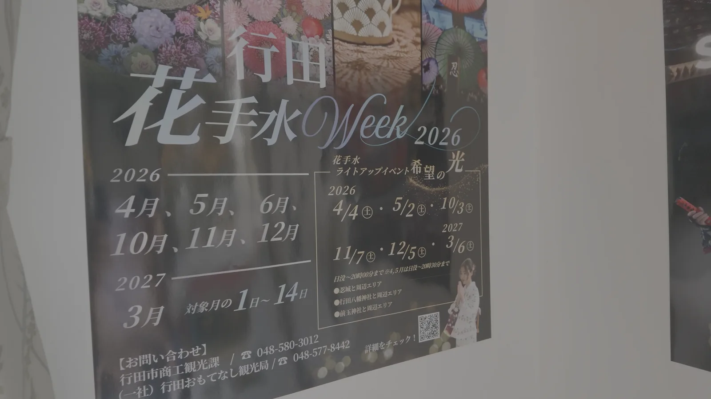

楽歌の城攻め見聞録 第2話
行田・忍城と石田堤を半日で歩く
— 水攻めに耐えた「浮き城」の理由
攻めても攻めても落ちないお城、というのは物語のなかの話だと思っていました。実在します。埼玉県行田市に。
忍城（おしじょう）。石田三成に水攻めされて、それでも落ちなかったお城です。小田原城が開城するまで持ちこたえて、最後まで自力では落とされませんでした。
で、今回はちょっと意地悪な回り方をしてみました。お城より先に、攻めた側が残したものを見に行く。 先に石田堤を歩いてから忍城の水面を見ると、同じ景色がまるで違って見えるんです。これが想像以上によかったので、その順番のままお届けします。
ちなみにこの日は小雨まじりの曇天。今回も天気には恵まれませんでした。まあ、水攻めのお城を見る日としては、雰囲気だけは満点です。
この記事でわかること読了 約10分
- 紛らわしい「石田堤」2か所の違いと、どちらへ行けばいいのか
- 水攻めがなぜ忍城を沈めきれなかったのか、地形から見た理由
- 御三階櫓の観覧料・休館日・駐車場と、あわせて回れるカフェと神社
今回まわった順番
| 順 | 場所 | 所在地 |
|---|---|---|
| 1 | 石田堤史跡公園 | 鴻巣市袋 |
| 2 | 忍城址・行田市郷土博物館（御三階櫓） | 行田市本丸 |
| 3 | 水城公園・ヴェールカフェ | 行田市水城公園 |
| 4 | 前玉神社 | 行田市埼玉 |
移動はすべて車です。4か所とも駐車場があります。石田堤史跡公園だけが鴻巣市、あとの3か所は行田市内なので、半日あればゆっくり回れます。
電車とバスでも行けますが、そのときは忍城・水城公園・前玉神社の3か所に絞るのがおすすめです。この3つはJR行田駅からの市内循環バスで結ばれていますし、忍城と水城公園は歩いてもまわれる距離にあります。石田堤史跡公園だけは別方向になるので、車向きの場所だと思っておいてください。
月曜と火曜は、行くお店・施設を選びましょう
御三階櫓（行田市郷土博物館）は月曜と、祝日の翌日、毎月第4金曜が休館。ヴェールカフェは火曜定休です。つまり月曜も火曜も、どこかが閉まっています。曜日だけは先に確認しておくと安心です。
忍城って、どんなお城？
まず地形の話をさせてください。ここがわからないと、このお城は本当にただの「水辺のきれいな櫓」になってしまうので。
忍城が建っているのは、利根川と荒川に挟まれた低い土地です。まわりには沼と湿地がびっしり。この地形が、そのままこのお城の性格になっています。
で、ここが面白いところなんですが ── 水が多いから守りにくい、のではありません。水が多いから、敵の進む道を絞れるんです。
沼と湿地だらけの土地では、足場になる場所が限られます。ということは、大軍で押し寄せても全員が横一列で戦えない。細い道に人が詰まって、一度にぶつかれる人数が減ってしまう。人数の多さが、そのまま力にならない地形なんですね。
築かれたのは室町時代の文明年間（15世紀後半）、この地を統一した成田氏によると伝えられています。初代・成田顕泰（あきやす）から、親泰（ちかやす）、長泰（ながやす）、氏長（うじなが）と4代・約100年にわたる居城でした。
そして1590年、豊臣秀吉の小田原攻めにともなって、北条方についていた忍城も包囲されることになります。ここからが本題です。
豆知識 — 「浮き城」の由来は、水攻めのほうでした
湿地に浮かんで見えるから「浮き城」、だと思っていました。行田市の説明はちょっと違います。
石田三成の水攻めを受けても城がなかなか沈まないので、見ていた人々が「城が浮いているからだ」と考えた ── そこから「浮き城」の名が轟いた、とされています。落ちなかったという事実そのものが、名前になったわけですね。
① 石田堤史跡公園 — 攻め手が残した土手

最初に向かったのは、忍城からは少し離れた石田堤史跡公園です。
ここに残っているのは城壁ではありません。攻めた側が造った堤の一部です。およそ430年前、忍城のまわりに水をためて孤立させるために築かれたもの。つまり、水攻めの仕掛けそのものです。
で、実際に目の前にあるのは、立派な石垣ではなく、道沿いに続くちょっとした土手。正直、知らずに通りかかったら気づかないと思います。もともとの地形を生かして土を盛る、という造り方だったと考えられています。
「水攻め」と聞くと、なにか鮮やかな奇策のように響きますよね。でも実際にやったことは、大勢でひたすら土を運んで、長い堤を築く力仕事です。かなり大がかりな土木工事。そう思って土手を眺めると、見え方がだいぶ変わってきます。
そして園内、高架の下にあるモニュメントがなかなかの曲者でして。人が立つと、頭の上から自動で解説が始まります。 完全に不意打ちでした。心の準備をしていなかったので、しっかり驚いています。動画の冒頭がそれです。
まぎらわしい — 「石田堤」は2か所あります
検索するとよく混ざるので、先に整理しておきますね。
石田堤史跡公園は鴻巣市袋にある公園で、解説板やモニュメントが整備されている、見学向けの場所です。今回訪ねたのはこちら。
いっぽう県指定史跡の「石田堤」は行田市堤根1262地先。こちらは堤そのものが約282メートル残っている場所で、昭和34年（1959年）3月20日に県指定記念物（史跡）になっています。
同じ堤の話ですが、場所も市も違います。カーナビに入れるときはご注意を。
水攻めは、なぜ忍城を沈めきれなかったのか
石田三成らが築いた堤は、全長28キロメートルにおよび、それをわずか1週間で造り上げたと伝えられています。数字だけ見ると、もう正気の沙汰ではありません。
ところが、水は作戦どおりには動いてくれませんでした。
地形の関係で、水は忍城のまわりではなく別の低い土地にたまってしまい、しまいには堤が決壊したと伝わります。結果、忍城は沈まず、小田原城が開城したあとまで持ちこたえました。
ここ、個人的にすごく好きなポイントなんです。堤を造れば終わり、ではないんですよね。水がどこへ流れて、どこにたまるのか。 そこまで読み切らないと、水攻めは成立しない。低地を利用する作戦は、その低地に一番詳しいのは誰か、という問題と裏表なわけです。
攻め手は堤を造れた。でも、水だけは最後まで思いどおりにならなかった。土を28キロ運んだ先に待っていたのがそれ、というのは、なかなかしびれる話だと思いませんか。
歴史メモ — 数字は話半分で
堤が決壊した原因や場所については諸説あります。籠城した人数や、城主の娘・甲斐姫（かいひめ）の活躍についても記録に差があり、史料によって数字がかなり変わります。数字そのものより、「低地を使おうとして、低地に足をすくわれた」という筋書きのほうを楽しむのが健康的だと思います。
DATA — 石田堤史跡公園
- 住所
- 〒369-0131 埼玉県鴻巣市袋326-1
- 見学
- 公園のため見学自由・無料
- アクセス
- JR高崎線 北鴻巣駅東口から鴻巣市コミュニティバス「フラワー号」吹上コースで「袋」下車、徒歩約5分（北鴻巣駅から徒歩だと約35分）
- 見どころ
- 高架下のモニュメントで、堤を築く様子の音声解説が流れます
- 問い合わせ
- 048-541-1321（鴻巣市）
※ 取材時点の情報です。お出かけ前に最新情報をご確認ください。
② 忍城 — 水に守られた側から見る

堤を歩いたあとに、この景色です。
橋の向こうに見えているのが御三階櫓（ごさんかいやぐら）。白い壁と黒い瓦が、灰色の空に妙に映えます。
さっきまで「水をためて沈める側」の土手を見ていたので、同じ水面が急に違って見えてくるんですよね。この水は、この城を守った水だ、という感じで。攻め手の視点から城の視点へ、頭のなかで陣営が入れ替わる感覚があって、これは順番のおかげだと思います。
ここは正直に — いまの櫓は、江戸時代のものではありません
現在の御三階櫓は昭和63年（1988年）の再建で、郷土博物館の開館にあわせて建てられたものです。
しかも面白いことに、建っている場所も当時とは違います。 かつての御三階櫓はいまの水城公園のあたりに建っていて、明治の忍城解体にともなって取り壊されました。つまりこのあと行くカフェのほうが、本来の櫓の場所に近いということになります。
ちなみに本来の御三階櫓が完成したのは元禄15年（1702年）、藩主・阿部正武（あべ まさたけ）の代。祖父の阿部忠秋（ただあき）が寛永16年（1639年）に五万石で入城してから、じつに60年以上あとのことです。ここで名実ともに「忍藩十万石の城」の形が整いました。

中は博物館の展示室になっていて、2階が忍城と城下町、3階が近代・現代の行田、そして4階が展望室です。四方の窓から行田の街が見渡せます。
ひとつだけ注意を。上下階の移動は階段のみで、エレベーターはありません。入場は郷土博物館の館内からになります。

そして行田といえば、足袋（たび）の街でもあります。近代の展示はそのあたりに踏み込んでいくので、お城目当てで入っても、出るころには足袋に詳しくなっています。おすすめです。

DATA — 忍城址・行田市郷土博物館（御三階櫓）
- 住所
- 〒361-0052 埼玉県行田市本丸17-23
- 電話
- 048-554-5911
- 開館
- 9:00〜16:30（最終入館 16:00）※忍城址そのものは終日見学可
- 休館
- 月曜（祝日・休日は開館）／祝日の翌日（土日は開館）／毎月第4金曜（テーマ展・企画展の開催中は開館）／年末年始
- 観覧料
- 一般200円 ／ 大学・高校生100円 ／ 小・中学生50円（20名以上の団体割引あり）
- 駐車場
- 無料。P1（普通車33台・バス4台）、P2（普通車23台・障がい者用1台）
- アクセス
- 秩父鉄道 行田市駅から徒歩12分 ／ JR高崎線 行田駅から市内循環バス（西循環コース）で「忍城址・郷土博物館前」下車
- 指定
- 忍城跡は県指定記念物（旧跡）／昭和38年8月27日指定
※ 行田市・行田たびナビの情報です。お出かけ前に最新情報をご確認ください。
③ 水城公園・ヴェールカフェ — 大正11年の建物でひと休み

水と土を追いかけたあとは、水城公園でひと休みです。さっき書いたとおり、本来の御三階櫓が建っていたあたり。歴史的には、ここがいちばんお城に近い場所とも言えます。
公園のほとりに立っているのが、ヴェールカフェ（旧忍町信用組合店舗）。名前のとおり、もとは信用組合として使われていた建物です。
これがまた、いい建物でして。大正11年（1922年）築の木造2階建、建築面積90平方メートル。 足袋産業で栄えた行田の、お金の流れを支えていた建物です。平成28年（2016年）12月22日に行田市指定有形文化財となり、日本遺産の構成資産にもなっています。
大きな窓、高い天井、淡い色の壁紙。座っているだけで妙に背筋が伸びます。今回は他のお客さんがいらしたので内装の全景は撮れませんでしたが、レトロな雰囲気がとにかく良かったです。窓の外には水辺、遠くには忍城がちらっと見えます。
メニューはレトロ喫茶の路線で揃えられています。看板メニューは「ヴェールソフト」だそうで ── これは次に行ったときの宿題ということにしておきます。
DATA — ヴェールカフェ（旧忍町信用組合店舗）
- 住所
- 埼玉県行田市水城公園2305
- 電話
- 048-556-4330（予約・問い合わせ）
- 営業
- 10:00〜17:00（L.O. 16:20）／ 夜 18:00〜21:00 は完全予約制
- 定休
- 火曜（祝日の場合は開館）／12月29日〜1月3日
- 席数
- 2階22席 ／ 1階8名
- 駐車場
- 忍城バスターミナル（無料）から徒歩3分 ／ 行田公民館（無料）から徒歩1分
- アクセス
- 秩父鉄道 行田市駅から徒歩15分 ／ JR高崎線 行田駅東口から市内循環バス「水城公園」下車 徒歩約1分
※ 行田たびナビ・ちょこたび埼玉の情報です。お出かけ前に最新情報をご確認ください。
④ 前玉神社 — 「埼玉」という地名は、ここから

最後に立ち寄ったのが、前玉神社（さきたまじんじゃ）。読み方がなかなかの難読ですが、ここ、「埼玉」という県名の発祥の地とされている神社です。
ご祭神は前玉彦命（さきたまひこのみこと）と前玉比売神（さきたまひめのみこと）の二柱。かつては「幸魂神社」と表記され、「魂が幸せになる神社」として、縁結びや夫婦円満の祈願所とされてきました。千数百年の歴史をもつ古社です。
そして地味に驚いたのが、社殿の立っている場所。「浅間塚（せんげんづか）」と呼ばれる古墳の上なんです。高さ8.7メートル、周囲92メートルほど。すぐ隣は、あの埼玉古墳群。神社が古墳の上に建っている、というだけでもう一日楽しめます。

境内を進んでいくと、手水舎が花でいっぱいになっていました。ひまわり、ホオズキ、菊、カーネーション。橙と黄色と紫が、水面にぎっしり。
戦国時代の水を追いかけて始まった一日が、最後は同じ水に花が浮かんでいるところで終わる。予定になかった寄り道が、いちばんきれいな締めになりました。 天気には振られっぱなしの一日でしたが、これは完全に得をしました。
DATA — 前玉神社
- 住所
- 埼玉県行田市大字埼玉5450
- 電話
- 048-559-0464
- 駐車場
- 無料（大型バスも可）
- アクセス
- JR高崎線 行田駅から市内循環バス「埼玉古墳公園前」下車 徒歩約8分 ／ 東北自動車道 羽生ICから約30分
- ひとこと
- 境内に暮らす4匹の猫をモチーフにした限定御朱印（毎月22日を含む前後数日）が人気だそうです
※ ちょこたび埼玉の情報です。お出かけ前に最新情報をご確認ください。
行田花手水week — 狙って行くなら、この日程です

行田では、市内の複数の会場で花手水を一斉に飾る「行田花手水week」という取り組みが行われています。会場は忍城址、行田八幡神社、前玉神社とその周辺。つまり、今回のルートとほぼ丸かぶりです。
ただし毎月やっているわけではありません。 開催月が決まっていて、しかもその月の1日から14日まで。狙って行くなら、ここは必ず確認してください。
DATA — 行田花手水week（現地ポスターより）
- 開催月
- 2026年 4月・5月・6月・10月・11月・12月 ／ 2027年 3月
- 期間
- 対象月の1日〜14日
- 会場
- 忍城址と周辺エリア ／ 行田八幡神社と周辺エリア ／ 前玉神社と周辺エリア
- ライトアップ
「希望の光」 - 2026年 4/4・5/2・10/3・11/7・12/5 ／ 2027年 3/6（いずれも土曜）。日没〜20:00（4・5月は20:30まで）
- 問い合わせ
- 行田市商工観光課 048-580-3012 ／ （一社）行田おもてなし観光局 048-577-8442
※ 取材時点のポスター掲示内容です。日程は変更されることがありますので、お出かけ前に必ず公式サイトでご確認ください。
訂正 — 動画内の説明について
この記事のもとになっている動画では、前玉神社の花手水を「この日はちょうど花手水Week」とご説明していますが、誤りでした。
訪問したのは2026年8月3日で、上記のとおり8月は行田花手水weekの開催月には含まれていません。 境内で見た花手水は、week期間外に飾られていたものです。お詫びして訂正します。
今回は行けなかった場所
正直に白状します。このルートでは、すぐ近くまで行っておきながら寄れなかった場所があります。
丸墓山古墳 — 三成が陣を張ったと伝わる場所
前玉神社のすぐそば、埼玉古墳群のなかにある古墳です。直径105メートル、6世紀初めの築造で、日本最大級の円墳とされています。
そして城攻め的に外せないのが、石田三成が水攻めの際、城がよく見えるこの古墳の上に陣を張ったという伝承が残っていること。埼玉県立さきたま史跡の博物館も、そう紹介しています。
攻め手の本陣と忍城を地図の上で線で結ぶと、その間に低い土地が広がっているのが見えてきます。城へ正面から詰め寄るより、この低地そのものを使えないか ── 水攻めという判断の筋道は、その位置関係から読めるんですね。地図を眺めるだけでも面白いので、ぜひ一度やってみてください。
県指定史跡の石田堤（行田市堤根）
先ほどの注意書きのほうです。堤そのものが約282メートル残っている場所で、鴻巣市の史跡公園とは別。「堤の実物を見たい」という方は、こちらが本命になります。
このルートを楽しむコツ
- 石田堤 → 忍城 の順で回る。 これが今回いちばんの発見でした。攻め手の土手を先に見てから城の水面を見ると、同じ景色の意味が変わります。逆順だと、この体験は起きません。
- 曜日の確認は必須。 御三階櫓は月曜・祝日の翌日・第4金曜が休館、ヴェールカフェは火曜定休。水曜から日曜のあいだが無難です。
- 花手水を見たいなら開催月を確認。 開催月の1日〜14日という、けっこう狭い窓です。逆に言えば、その期間に行けば3か所まとめて見られます。
- 車が楽。ただし電車なら3か所に絞る。 忍城・水城公園・前玉神社はJR行田駅からの市内循環バスで回れます。石田堤史跡公園だけは別方向です。
- 御三階櫓は階段のみ。 4階の展望室まで階段で上がります。足に不安のある方は、無理せず博物館の展示だけでも十分楽しめます。
おわりに
御三階櫓だけを眺めていたら、忍城は「水辺に立つきれいなお城」で終わっていたと思います。
でも、石田堤を歩いて、地図で距離を確かめてから戻ってくると、水面の意味まで変わって見えました。攻め手が残した土手、城を守った低地と水、突然始まった現地の音声案内。そして、いまも使われている大正の建物と、水に浮かぶ花。
一日歩いてみたら、バラバラに見えていた場所が、どれも「水」でつながっていたんですね。低地を使おうとした側が、低地に足をすくわれた。 そのことを、堤と城と公園と神社が、それぞれ違う角度から教えてくれる街でした。
難攻不落の理由を、自分の足で確かめられるお城です。行田、ぜひ行ってみてください。
次回は栃木県宇都宮市、宇都宮城へ向かいます。どうぞお楽しみに。